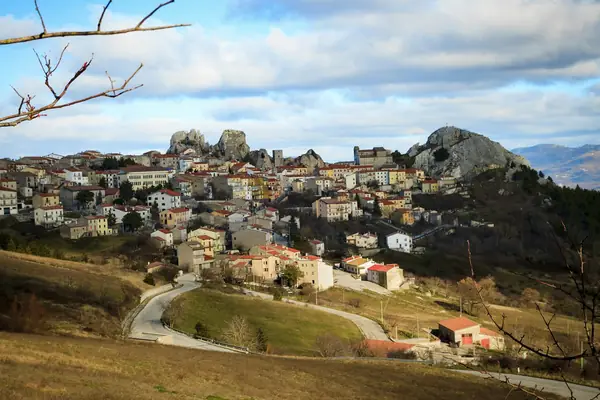

Home › Wine regions › Molise
Molise wine region

Photo: Lorenzo Lamonica on Unsplash
A tiny region with a rare local red.
Vines grow in all 20 regions. Wines are classed DOCG, DOC and IGT.
Climate and soil
Hilly, warm and dry, between the Apennines and the Adriatic.
Key areas and appellations
Biferno, Pentro di Isernia, Tintilia del Molise
Good to know
One of Italy's smallest wine regions. Tintilia is a local red grape now enjoying a revival.
The grapes of Molise
- Tintilia (red): blackberry, plum, spice. Best known in Molise.
- Montepulciano (red): plum, black cherry, spice. Best known in Abruzzo, Marche.
- Falanghina (white): pear, citrus, floral. Best known in Campania.
Notable producers in Molise
- Di Majo Norante
- Borgo di Colloredo
- Catabbo
- Cipressi
- Terresacre
Official appellations
| Appellation | Status | Style | Grapes |
|---|---|---|---|
| Biferno Molise's main historic DOC. | DOC | White, Red | Montepulciano, Trebbiano |
| Molise Region-wide DOC. | DOC | White, Red | Montepulciano, Tintilia |
| Pentro d'Isernia Inland DOC around Isernia. | DOC | White, Red | Montepulciano |
| Tintilia del Molise (2011) Molise's flagship DOC (2011) for Tintilia, a native red grape grown on hillside vineyards of at least 200 m in the provinces of Campobasso and Isernia. Rosso, Rosato and Rosso Riserva must be at least 95% Tintilia; the Riserva needs two years from harvest and 13% alcohol, with no wood required. Good to know: the grape was nearly extinct before growers revived it, and the whole DOC is only about 65 hectares. | DOC | Red, Rosé | Tintilia |
Molise wines to try
Di Majo Norante Contado Aglianico
Southern Aglianico: dark cherry, smoke and earthy spice with firm grip.
Food: Lamb chops, sausages, aged cheese
Food to try with Molise wines
- Aubergine parmigiana: Southern Italian reds with ripe fruit and fresh acidity stand up to tomato, aubergine and melted cheese without heavy tannin.
- Lasagne: Rich meat ragù and béchamel need medium-bodied Italian reds whose high acidity balances tomato and cuts through cheese.
- Spaghetti alle vongole: Clams, garlic and chilli suit crisp, saline southern Italian whites that mirror the briny juices and lift the olive oil.
- Chicken cacciatore: A hunter-style tomato, herb and olive braise wants a high-acid Italian red that matches the sauce's tang and savoury edge.
- Caprese salad: Ripe tomatoes, mozzarella and basil need a light, fresh Italian white whose acidity mirrors the tomato and refreshes the cheese.
- Spaghetti bolognese: A meaty tomato ragù pairs naturally with Italian reds whose bright acidity matches the sauce and cuts the richness.
More wine regions in Italy
The Wine Reference newsletter
New wines, stories and career guides, one email a week at most.
Over 18s only. Unsubscribe any time with one click. Your email is stored securely by Kit and never shared.
Support The Wine Reference
This guide is free, with no paywall. If it helped you choose a bottle, you can buy me a glass and keep it growing.
🍷 Buy me a glass